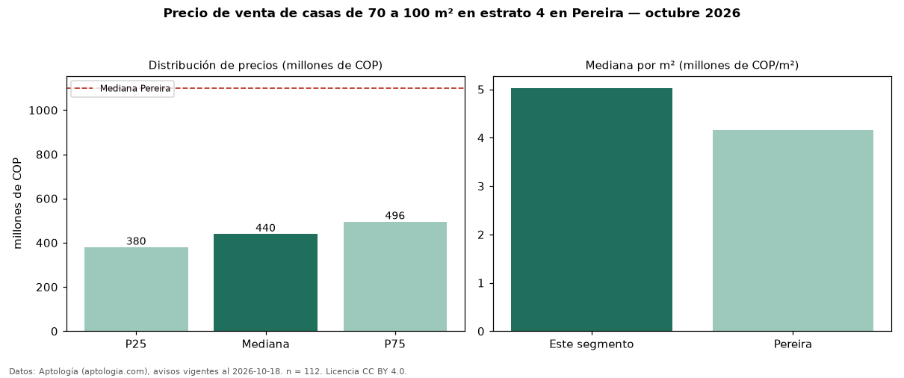

Precio de venta de casas de 70 a 100 m² en estrato 4 en Pereira — octubre 2026
Con 112 avisos vigentes, el precio mediano de casas de 70 a 100 m² en estrato 4 en venta en Pereira es COP 440 millones. Frente a la mediana de las casas en estrato 4 en venta de Pereira (COP 580 millones, n = 603), queda 24 % por debajo; este segmento reúne el 19 % de esos avisos. Por metro cuadrado, la mediana es COP 5,03 millones/m² (n = 112), 26 % por encima de las casas en estrato 4 en venta de Pereira (COP 4,00 millones/m²). El área mediana anunciada es 90 m². El segmento con más oferta es el de 3 o más habitaciones (110 avisos, mediana COP 442 millones). La administración mediana declarada es COP 320.000 al mes (n = 51). La mediana de todas las casas en venta de Pereira es COP 1,10 mil millones (−60 % de diferencia). 90 % de los avisos con el dato declara parqueadero. Datos: Aptología (aptologia.com), CC BY 4.0 — https://www.aptologia.com/venta/pereira. Archivos: PDF, CSV con las cifras y gráfica PNG.

| Avisos únicos | 112 |
|---|---|
| Percentil 25 | COP 380.000.000 |
| Mediana | COP 440.000.000 |
| Percentil 75 | COP 495.500.000 |
| Mediana por m² | COP 5.027.472 |
Fuente: avisos vigentes de portales inmobiliarios recopilados por Aptología, deduplicados (mínimo 30 avisos únicos por celda). Precios pedidos, no cerrados. Fecha: 2026-10-18.